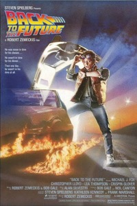
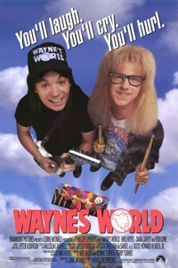
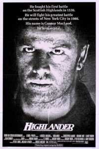

" After years working with digital agencies on finance/investment projects, i joined LeWagon to take a closer look at the Tech product they build and what's under the hood... "
|

|
Back To The Future (1985)"In this 1980s sci-fi classic, small-town California teen Marty McFly (Michael J. Fox) is thrown back into the '50s when an experiment by his eccentric scientist friend Doc Brown (Christopher Lloyd) goes awry. Traveling through time in a modified DeLorean car, Marty encounters young versions of his parents (Crispin Glover, Lea Thompson), and must make sure that they fall in love or he'll cease to exist. Even more dauntingly, Marty has to return to his own time and save the life of Doc Brown." |
|

|
Wayne's World (1992)"A big screen spin-off of the "Saturday Night Live" skit. Rob Lowe plays a producer that wants to take the public access "Wayne's World" to the world of commercial television. Wayne (Mike Myers) and Garth (Dana Carvey) battle to save their show and Wayne's girlfriend from Lowe." |
|  |
Highlander (1986)"When the mystical Russell Nash (Christopher Lambert) kills a man in a sword fight in a New York City parking lot, he leaves a sliver of an ancient weapon lodged in a car in the process. After brilliant forensics specialist Brenda Wyatt (Roxanne Hart) recovers evidence of the mysterious weapon, she and her partner, Lt. Frank Moran (Alan North), embark on an investigation Of Nash that will land them in the middle of a dangerous, centuries-old feud between powerful immortals." |